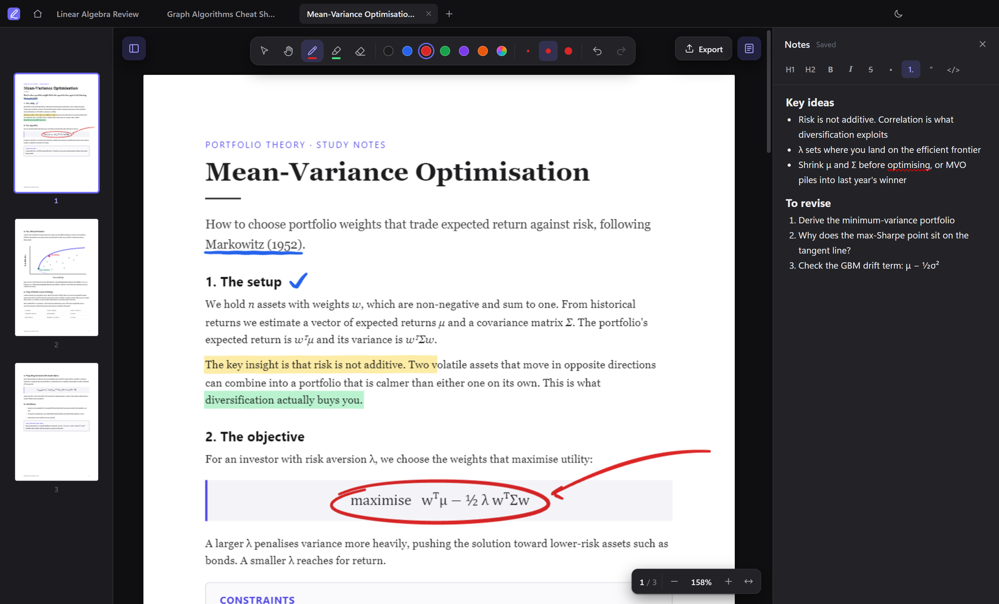

Inkwell
Project 4
A desktop app for annotating PDFs and taking notes beside them, designed as a free alternative to paid tools like Adobe Acrobat. You can open several PDFs in tabs, write on them with a pressure-sensitive pen or a highlighter, keep Markdown notes alongside, and export a copy with your annotations built in.
Most of the work went into making writing feel smooth. Each page is split into three canvas layers, so only the stroke you're drawing redraws as you write. Pen input uses every sample the stylus reports, and only the pages near the screen are rendered, so a 300-page PDF opens as quickly as a short one. The highlighter blends into the page like real ink instead of covering the text.
It's built with Electron, React and TypeScript, with PDF.js rendering the pages and everything saved locally on your computer. Export uses pdf-lib to draw your strokes into the original PDF as vector shapes, so they show up in any PDF reader.
 TypeScript
TypeScript
- Electron
 React
React- PDF.js
- pdf-lib
 Vite
Vite
